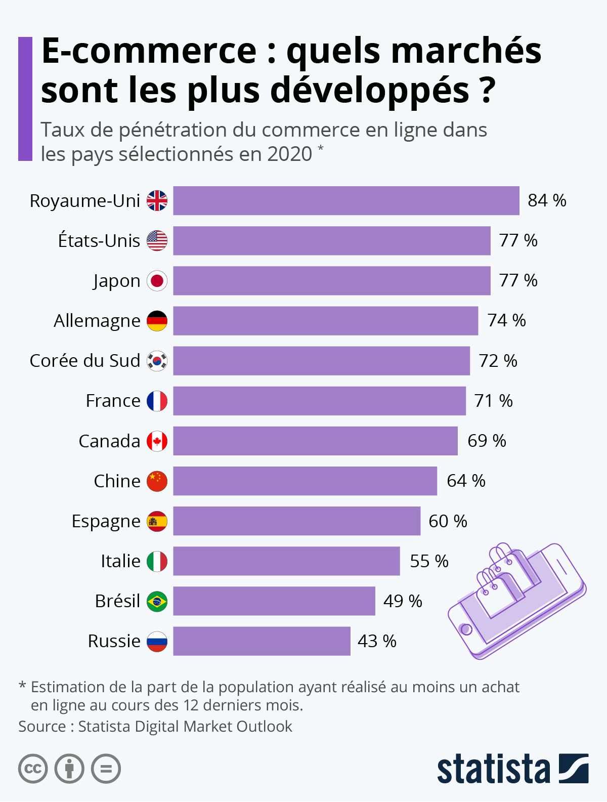
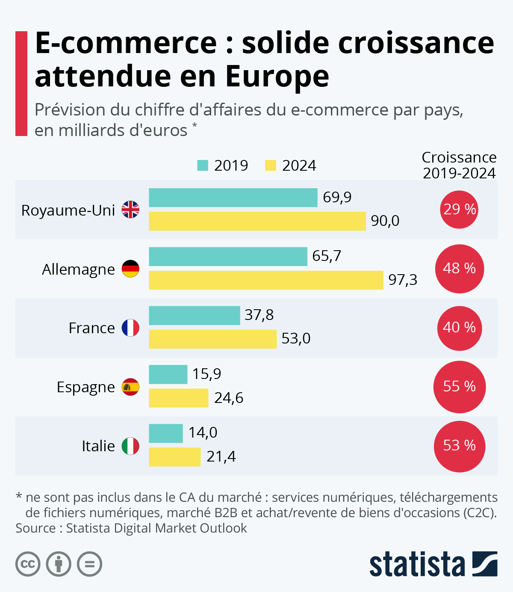

Analyse Expertise de Sites de Click and Collect : Enjeux Essentiels
Le Click and Collect : une évolution majeure dans le commerce en ligne
Le Click and Collect représente une évolution majeure dans le paysage du commerce en ligne, offrant aux consommateurs la flexibilité de commander des produits sur internet et de les récupérer ensuite en magasin. Cette méthode hybride combine les avantages de la commodité en ligne avec la rapidité de la récupération en point de vente physique, répondant ainsi aux attentes modernes des consommateurs pour une expérience d'achat efficace et personnalisée.
Adoption et Tendances
Dès le début de l’année 2019, la majorité des enseignes de vente au détail avaient déjà intégré le Click and Collect comme une composante clé de leur stratégie commerciale. En 2018, environ 38 % des consommateurs avaient utilisé ce service, témoignant de sa popularité croissante. Aujourd'hui, plus de 90 % des supermarchés et divers secteurs proposent cette option de service, avec une préférence marquée pour les paiements mobiles, qui représentent plus de 7 % des transactions.
 Avantages Stratégiques
Le Click and Collect permet non seulement aux consommateurs de gagner du temps en planifiant leurs achats en ligne, mais aussi de comparer facilement les produits avant de finaliser leurs achats. Cette approche renforce la satisfaction client et la fidélité à la marque grâce à la proximité et à la commodité du retrait en magasin.
Conformité aux Normes RGPD et ePrivacy
Pour nous, opérateurs de sites de Click and Collect, respecter les directives strictes du Règlement Général sur la Protection des Données (RGPD) est essentiel pour garantir la sécurité des informations personnelles de nos utilisateurs. Voici les principales mesures que nous prendrons pour assurer la conformité :
- Collecte de Données Personnelles : Nous limiterons la collecte aux informations strictement nécessaires et obtiendrons toujours le consentement explicite de l'utilisateur.
- Sécurisation des Données : Nous utiliserons le protocole HTTPS pour chiffrer les données transmises et assurerons un stockage sécurisé des informations personnelles dans des bases de données protégées.
- Transparence et Consentement : Nous informerons clairement nos utilisateurs sur l'utilisation de leurs données et leur offrirons la possibilité de les modifier ou de les supprimer à tout moment (droit à l'oubli).
- Gestion des Cookies : Nous obtiendrons le consentement préalable des utilisateurs pour l'utilisation de cookies de suivi et respecterons les règles spécifiques concernant leur utilisation et leur durée de vie.
Ces mesures garantiront non seulement la conformité avec la législation en vigueur mais aussi la protection efficace des données personnelles de nos utilisateurs tout au long de leur expérience avec notre service.
Proposition Personnalisée pour Répondre aux Besoins du Client
Pour nous, répondre efficacement aux besoins spécifiques des clients désirant mettre en place un service de Click and Collect passera par une approche méthodique et personnalisée :
- Analyse Approfondie des Besoins : Nous organiserons des réunions détaillées pour comprendre les objectifs commerciaux et les attentes spécifiques du client. Cela inclura l'identification des fonctionnalités cruciales telles que la gestion des stocks en temps réel et les systèmes de paiement simplifiés.
- Personnalisation du Design et du Contenu : Nous créerons des maquettes visuelles afin de présenter au client l'esthétique et les fonctionnalités du site, en harmonie avec sa charte graphique existante.
- Intégration de Fonctionnalités Spécifiques : Nous mettrons en œuvre des fonctionnalités telles que la lmitation de commandes par créneaux horaires, répondant ainsi aux besoins particuliers du service.
- Conformité aux Normes : Nous nous engagerons à garantir que toutes les pratiques de sécurité des données et d'expérience utilisateur seront rigoureusement respectées. Cela renforcera la confiance de nos utilisateurs et assurera une expérience fiable et sécurisée.
Conclusion
En suivant cette approche détaillée et en intégrant les meilleures pratiques en matière de sécurité des données et d'expérience utilisateur, nous sommes en mesure de développer un site robuste de Click and Collect. Ce site répondra non seulement aux attentes du client mais constituera également un avantage concurrentiel significatif, renforçant ainsi sa position sur le marché et sa fidélité client, tout en respectant les exigences réglementaires essentielles.